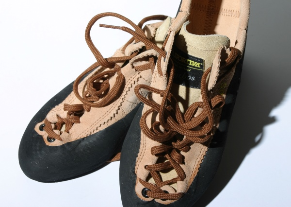

Holds, Equipment, Technique, & Grades
There are many different aspects of bouldering that you need to be aware of in order to climb as best as you can. These include: Holds, Equipment, Technique, and Grades.
Holds
There are mainly 4 different types of holds that you will come across when bouldering, which are jugs, crimps, slopers, and pinches.
Jugs
Jugs are holds that you can easily get a handful of. They are the best for climbers, but because they are so good to hold onto, they normally will mean a large powerful move once you get to higher grades of climbing.
Crimps
Crimps are holds that you can usually only get some of your fingers onto. These are usually something you will get better at once you’ve trained your finger strength, as some can get as small as being a half pad of your finger tip.
Slopers
Slopers are holds that you can’t really grab onto at all, and you need to rely on body tension to hold onto with an open hand. Having a strong wrist can also help to get better with slopers.
Pinches
Pinches are another hold that is tough for beginners, as they rely on your pinching strength to be able to hold your body up. They require more grip and thumb strength.
Equipment

Some of the common types of equipment that you will see in bouldering are chalk and a chalk bag, climbing shoes, and crash pads. Because bouldering is not normally very high (unless you are doing a highball which can be over 20 feet) you don’t need to have a harness or rope to do it. That being said, you still need some fall protection. Most gyms will have padding built into the floor of the bouldering areas, but if you want to go outside you will have to buy your own crash pad. Between the costs of those and climbing shoes which can each be above $200, the sport can get pretty expensive, but you normally don’t have to buy these very often.
Technique
There are many different techniques involved with climbing in general, but in bouldering it comes out much more often. Some of the different techniques will help quite a bit with getting over a problem that you can’t seem to find a way up. Things like drop knees, where you drop your back knee down to get a better reach to the opposite side, knee bars, where you have your foot and knee wedged between holds to lock yourself into a more stable position, and many more.
Grades
The grading scale in bouldering is different depending on the country, and gym that you’re in but the American standard is the Vermin scale, which grades each bouldering on the V-scale. VB is the very lowest for beginners, then it goes from V0 up to V17. V17 climbs are insanely hard and have only been done by around 8 people in the world. The European standard for bouldering grades is the Fontainebleau scale, named after where bouldering first came from. It starts at a level 3 which is equal to VB and then goes through grades with a number, letter, and plus or minus depending on the challenge. The grades are 3, 4-, 4, 4+, 5, 5+ 6A, 6A+, 6B, 6B+, 6C, 6C+, 7A, 7A+, up in a similar way to 9A which is equal to V17. To learn more about these grade visit https://www.guidedolomiti.com/en/rock-climbing-grades/